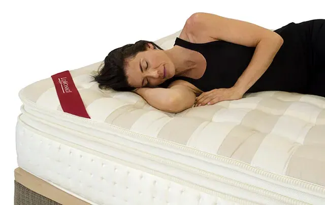

Cuánto tardo en adaptarme a mi nuevo colchón

Tomar la decisión de cambiar de colchón
Sin embargo, se ha demostrado tras números estudios, que existen tres cualidades que deben darse en un equipo de descanso para descansar correctamente: hablamos de confort, firmeza y temperatura. Grupo Lo Monaco gracias a los colchones LoMonaco Triple Natura Plus ha logrado fusionar en una única gama (compuesta por varías líneas) todo lo que un colchón debe dar para poder descansar bien.
En la mayoría de las ocasiones el durmiente tiene claro cuando es el momento idóneo para realizar el cambio de colchón y plantearse comprar un colchón nuevo, siendo el motivo que más nos mueve a la sustitución de nuestro viejo colchón por uno nuevo, el deterioro del mismo por el paso de los años. Y un dato curioso, según un estudio llevado a cabo hace varios años por la Asociación Europea de fabricantes de Camas, los españoles somos los europeos que más tardamos en deshacernos de nuestro viejo colchón, solemos dormir en el mismo equipo de descanso la friolera de 12 años (un lapso muy por encima de lo que recomiendan los fabricantes).

Período de adaptación al nuevo colchón: totalmente necesario.
Si tomamos como referencia este intervalo del que hemos hablado en el párrafo anterior, cuando acabamos de comprar un colchón nuevo, existe un período de adaptación a un nuevo colchón que forma parte del propio proceso de cambio, incluso si hemos adquirido un modelo similar al que ya teníamos.
Y es que, nos hemos pasado más de una década durmiendo con el que empieza a convertirse en nuestro enemigo… Dolores lumbares que nos parecen normales, despertares nocturnos que achacamos a motivos ajenos a nuestra cama… Rutinas en nuestro sueño que consideramos normales y sin embargo no denotan buen descanso.
Al dormir las primeras noches en el nuevo colchón, cualquier sensación diferente la notaremos ampliada, porque además de la extrañeza lógica que nos provoca la nueva superficie, la expectativa creada nos hará estar alerta. Progresivamente nos iremos adaptando a la nueva cama, las anomalías que en un principio sentíamos y las molestias no tardarán en remitir y poco a poco el cuerpo se acostumbrará a un nuevo colchón. El período para ello puede ser variable.
Sin embargo, en determinadas ocasiones, va pasando el tiempo y el descanso que necesitamos no llega, entonces es posible que te hayas equivocado al elegir el colchón, por eso y como paso previo, es fundamental informarse y dejarse asesorar por expertos. Grupo Lo Monaco pone a tu disposición un servicio de asesoramiento en descanso exclusivo y gratuito, basado en la amplia experiencia y visión que ofrecen 20 años de trayectoria.
Mis necesidades de descanso y un colchón nuevo
Descansar bien es una necesidad fisiológica, que pone nuestro cuerpo a punto y lo prepara para afrontar las exigencias que el devenir cotidiano impone, por eso para rendir y estar completamente lleno de energía es fundamental dormir y el buen descanso que un buen colchón puede proporcionar.
En Grupo Lo Monaco ponemos a tu disposición una amplia gama de productos y materiales (colchones de látex, colchones viscoelásticos, muelles y espumaciones HR) para que encuentres el colchón que más de adapte a ti.